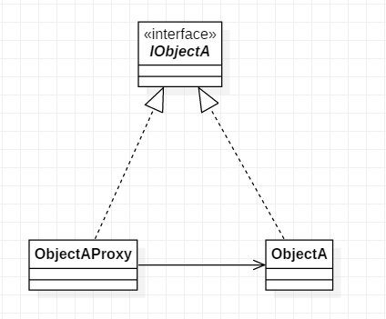

给某一个对象提供一个代理对象，并由代理对象控制对原对象的引用。通俗的来讲代理模式就是我们生活中常见的中介。
java中, 代理可以分为静态代理和动态代理, 动态代理目前有两种一种是jdk本身提供的动态代理, 另一种是第三方Cglib动态代理
角色
UML类图

代码
public interface IObjectA {
void show();
}
public class ObjectA implements IObjectA {
@Override
public void show() {
System.out.println("object a");
}
}
public class ObjectAProxy implements IObjectA {
private ObjectA objectA;
public ObjectAProxy() {
objectA = new ObjectA();
}
@Override
public void show() {
System.out.println("output log");
objectA.show();
}
}
代理模式与装饰器模式的区别
通过UML类图, 可以看出代理模式与装饰器模式的结构基本一样. 他们之间的区别如下: